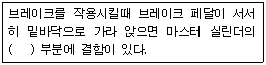

자동차정비기능사 (2004-07-18 기출문제)
1과목: 자동차공학
1. 4kcal의 열량을 전부 일로 바꾸었을 때 그 일의 크기는?
- 75kgf·m
- 539kgf·m
- 1708kgf·m
- 2135kgf·m
(정답률: 50%)

2. 냉각장치에서 흡수되는 열은 연료 전발열량의 약 몇 %인가?
- 30~35
- 40~50
- 55~65
- 70~80
(정답률: 67%)
3. 패스트 아이들 기구는 어떤 역할을 하는가?
- 연료가 절약되게 한다.
- 빙결을 방지한다.
- 고속회로에서 연료의 비등을 방지한다.
- 기관이 워밍업 되기전에 엔진의 공전속도를 높게하기 위한 기구이다.
(정답률: 86%)
4. 클러치의 구비조건이 아닌 것은?
- 회전부분의 평형이 좋을 것
- 회전관성이 클 것
- 회전력 단속이 확실할 것
- 과열되지 않을 것
(정답률: 90%)
5. 변속기에서 싱크로메시 기구는 어떤 작용을 하는가?
- 가속 작용
- 감속 작용
- 동기 작용
- 배력 작용
(정답률: 66%)
6. 연소실체적이 20㏄이고, 행정체적이 160㏄일 때의 압축비는?
- 5 : 1
- 6 : 1
- 8 : 1
- 9 : 1
(정답률: 73%)
7. 클러치가 미끄러지는 원인 중 틀린 것은?
- 마찰면의 경화, 오일 부착
- 페달 자유간극 과대
- 클러치 압력스프링 쇠약, 절손
- 압력판 및 플라이휠 손상
(정답률: 80%)
8. 핸들이 1회전하였을 때 피트먼암이 40° 움직였다. 조향기어비는?
- 9 : 1
- 0.9 : 1
- 40 : 1
- 4 : 1
(정답률: 71%)
9. 타이어의 유효반경이 0.5m인 차륜이 500rpm으로 회전하며, 미끄러짐이 없을 때 차량의 속도는 약 몇 ㎞/h인가?
- 10
- 56
- 70
- 94
(정답률: 30%)
10. 기관의 윤활유 급유 방식과 거리가 먼 것은?
- 비산압송식
- 전압송식
- 비산식
- 자연순환식
(정답률: 71%)
11. 수온조절기가 하는 역할이 아닌 것은?
- 라디에이터로 유입되는 물의 양을 조절한다.
- 65℃ 정도에서 열리기 시작하고 85℃정도에서는 완전히 열린다.
- 필렛형, 벨로우즈형, 스프링형 등 3종류가 있다.
- 기관의 온도를 적절히 조정하는 역할을 한다.
(정답률: 58%)
12. 전자제어 연료분사장치에 사용하는 베인식 에어플로미터(Air flow meter)의 구성부품이 아닌 것은?
- 흡기온 센서
- 포텐셔 미터
- 댐핑 쳄버
- O2센서
(정답률: 62%)
13. 전자제어 연료분사장치의 구성품 중 다이어프램 상하의 압력차에 비례하는 다이어프램 신호를 전압변화로 만들어 압력을 측정할 수 있는 센서는?
- 반도체 피에조(piezo) 저항형 센서
- 메탈코어형 센서
- 가동벤식 센서
- SAW식 센서
(정답률: 75%)
14. 메스에어플로우센서(mass air flow sensor)의 핫 와이어로 주로 사용되는 것은?
- 가는 백금선
- 가는 은선
- 가는 구리선
- 가는 알루미늄선
(정답률: 66%)
15. 전자제어 엔진에서 냉간시 점화시기 제어 및 연료분사량 제어를 하는 센서는?
- 흡기온센서
- 대기압센서
- 수온센서
- 공기량센서
(정답률: 59%)
16. 에어콘의 구성부품 중 고압의 기체냉매를 냉각시켜 액화시키는 작용을 하는 것은?
- 압축기
- 응축기
- 팽창밸브
- 증발기
(정답률: 76%)
17. 다음 중 배기가스 정화에 삼원 촉매 변환기를 이용한 차량에서는 어떠한 공연비에서 정화율이 가장 높은가?
- 1:1
- 8:1
- 12:1
- 15:1
(정답률: 59%)
18. 다음 중 디젤기관의 장점이 아닌 것은?
- 일산화탄소와 탄화수소 배출물이 작다.
- 제동 열효율이 높다.
- 시동에 소요되는 동력이 크다.
- 수명이 길다.
(정답률: 49%)
19. 다음은 점화플러그에 대한 설명이다. 틀린 것은?
- 전극 앞부분의 온도가 950℃이상 되면 자연발화 될 수 있다.
- 전극부의 온도가 450℃이하가 되면 실화가 발생한다.
- 점화플러그의 열방출이 가장 큰 부분은 단자부분이다
- 전극의 온도가 400~600℃인 경우 전극은 자기청정작용을 한다.
(정답률: 53%)
20. 자동변속기 오일의 요구 조건이 아닌 것은?(오류 신고가 접수된 문제입니다. 반드시 정답과 해설을 확인하시기 바랍니다.)
- 기포가 생기지 않을 것
- 마찰계수가 낮을 것
- 저온 유동성이 좋을 것
- 점도지수 변화가 적을 것
(정답률: 59%)
2과목: 자동차정비 및 안전기준
21. 후부반사기 기준에 있어서 야간에 자동차의 뒷쪽 몇 미터의 거리에서 전조등으로 후부 반사기를 비출 경우 그 반사광을 비춘 위치에서 식별할 수 있어야 하는가?
- 100
- 150
- 200
- 250
(정답률: 44%)
22. 어린이용 좌석의 규격은 가로·세로 각각 몇 ㎝이상 이어야 하는가?
- 15
- 17
- 27
- 65
(정답률: 61%)
23. 조향핸들의 회전각도와 조향바퀴의 조향각도와의 비율을 무엇이라 하는가?
- 조향핸들의 유격
- 최소 회전반경
- 조향 안전 경사각도
- 조향비
(정답률: 72%)
24. 후부안전판은 자동차너비의 몇 % 미만이어야 하는가?
- 60
- 80
- 100
- 120
(정답률: 57%)
25. 소형자동차의 차체 오버행의 허용 한도는?
- 2/3 이하
- 1/2 이하
- 11/20 이하
- 3/20 이하
(정답률: 49%)
26. 다음 중 인화성 물질이 아닌 것은?
- 아세틸렌 가스
- 가솔린
- 프로판가스
- 산소
(정답률: 75%)
27. 건설기계 및 자동차 정비 작업장에 준비해야 될것 중 안전과 관계가 먼 것은?
- 응급용 의약품
- 붕산수
- 소화기 및 소화용구
- 방청용 오일
(정답률: 72%)
28. 축전지 충전시의 주의사항 중 옳지 않은 것은?
- 염산을 준비하여 만일의 경우에 대비한다.
- 환기장치를 한다.
- 불꽃이나 인화물질의 접근을 금한다.
- 축전지 전해액의 온도가 45℃ 이상되지 않도록 한다.
(정답률: 86%)
29. 다이얼 게이지 취급시 안전사항이다. 잘못 설명한 것은?
- 작동이 불량하면 스핀들에 주유하던가 그리스를 발라서 사용한다.
- 분해 소제나 조정은 하지 않는다.
- 다이얼 인디케이터에 어떤 충격이라도 가해서는 안 된다.
- 측정시는 측정물에 스핀들을 직각으로 설치하고 무리한 접촉은 피한다.
(정답률: 82%)
30. 해머를 사용할 때에 주의하여야 할 사항 중 틀린 것은?
- 해머를 휘두르기 전에 반드시 주위를 살핀다.
- 장갑을 끼고 작업한다.
- 사용중에 자주 조사한다.
- 좁은 곳에서는 작업을 금해야 한다.
(정답률: 66%)
31. 전기용접 작업할 때의 주의사항 중 틀린 것은?
- 피부의 노출을 없이한다.
- 슬랙(slag)제거 때에는 보안경을 착용한다.
- 가열된 용접봉 홀더는 물에 넣어 냉각시킨다.
- 우천시 옥외 작업을 금한다.
(정답률: 88%)
32. 정비공장에 대한 안전 수칙이다. 틀린 것은?
- 전장 테스터 사용시 정전이 되면 스위치를 ON에 놓아야 한다.
- 액슬 작업시 잭과 스탠드로 고정해야 한다.
- 엔진을 시동하고자 할 때 소화기를 비치해야 한다.
- 적재 적소의 공구를 사용해야 한다.
(정답률: 86%)
33. 기관 밸브를 탈착했을 때 주의사항 중 맞는 것은?
- 밸브는 떼어서 순서 없이 놓아도 좋다.
- 밸브를 떼어낼 때 순서가 바뀌지 않도록 반드시 표시를 한다.
- 밸브에 묻은 카아본은 제거하기 위해 그라인더에 조금씩 간다.
- 밸브 고착시는 볼핀(쇠) 해머로 충격을 가하여 떼어 낸다.
(정답률: 86%)
34. 다음 운반 기계에 대한 안전수칙 중 틀린 것은?
- 무거운 물건을 운반할 경우에는 반드시 경종을 울린다.
- 흔들리는 화물은 사람이 승차하여 붙잡도록 한다.
- 기중기는 규정 용량을 초과하지 않는다.
- 무거운 물건을 상승시킨채 오랫동안 방치하지 않는다
(정답률: 90%)
35. 탁상용 연삭기 덮개의 노출 각도는 얼마를 초과해서는 안 되는가?
- 60도
- 70도
- 80도
- 90도
(정답률: 42%)
36. 자동차의 교류 발전기에서 직류로 정류하려면 다음 중 어느 것을 사용하여야 하는가?
- 전기자(armature)
- 조정기(requlator)
- 실리콘 다이오드(diode)
- 릴레이
(정답률: 67%)
37. 브레이크 장치에서 페이드(Fade) 현상이 가장 적게 일어나는 제동 장치는?
- 디스크 브레이크
- 서어보 브레이크
- 넌서어보 브레이크
- 2리이딩 슈우 브레이크
(정답률: 74%)
38. 전자제어 기관에 적용되는 가장 이상적인 공연비는?
- 12:1
- 13.7:1
- 14.7:1
- 17:1
(정답률: 82%)
39. 다음 중 디젤 노크를 방지하기 위한 방법이 아닌 것은?
- 착화성이 좋은 연료를 사용한다.
- 압축비가 높은 기관을 사용한다.
- 분사 초기의 연료 분사량을 많게하고 착화 후기 분사량을 줄인다.
- 연소실 내의 와류를 증가시키는 구조로 만든다.
(정답률: 63%)
40. 실린더 헤드의 개스킷이 인접된 실린더 사이에서 파괴되었다면 무엇으로서 알수 있는가?
- 압축 압력 게이지
- 필러 게이지
- 다이얼 게이지
- 가스 분석기
(정답률: 61%)
3과목: 안전관리
41. 기관의 점화시기 변동 요건이 아닌 것은 어느 것인가?
- 엔진의 회전수
- 엔진에 가해진 부하
- 사용연료의 옥탄가
- 사용 윤활유
(정답률: 71%)
42. 다음 중 한쪽 방향에 대해서는 전류를 흐르게 하고 반대 방향에 대해서는 전류의 흐름을 저지하는 것은?
- 다이오드
- 컬렉터
- 콘덴셔
- 전구
(정답률: 72%)
43. 각종 센서들의 신호를 근거로 해서 엔진상태를 적당한 공전 속도로 유지시키는 장치는?
- 크랭크각 센서
- 산소 센서
- 차속 센서
- ISC-Servo(STEPPER MOTOR)
(정답률: 65%)
44. 휠얼라이먼트가 없는 현장에서 토인을 측정할려면 타이어에 중심선을 그어야 하는데 그 작업은?
- 캠버를 측정하기전에 한다.
- 카아스터를 측정하기전에 한다.
- 타이어를 턴 테이블위에 내려 놓은 다음에 한다.
- 타이어를 턴 테이블에서 들었을때 한다.
(정답률: 43%)
45. 클러치판에 기름이 묻어 미끄러진다. 고장 개소는 어느 것인가?
- 압력판 스프링이 노쇠하여 기름이 샌다.
- 페이싱이 닳아서 기름이 샌다.
- 변속기 앞쪽 오일시일이 파손되었다.
- 엔진 오일의 점도가 높다.
(정답률: 63%)
46. 주행 중 조향핸들이 무거워졌다. 원인 중 틀린 것은?
- 앞타이어의 공기가 빠졌다.
- 조향기어 박스의 오일이 부족하다.
- 볼 조인트의 과도한 마모
- 타이어의 밸런스가 불량하다.
(정답률: 51%)
47. 다음 중 자동변속기의 구성 부품이 아닌 것은?
- 제어장치
- 토크변환기
- 유성기어유닛
- 싱크로메시
(정답률: 55%)
48. 다음 중 변속기 내의 싱크로메시 엔드플레이 측정은 어느 것으로 하는가?
- 직각자
- 필러게이지
- 다이얼게이지
- 마이크로미터
(정답률: 46%)
49. 극판의 크기, 판의 수 및 황산 양에 의해서 결정되는 것은?
- 축전지의 용량
- 축전지의 전압
- 축전지의 전류
- 축전지의 전력
(정답률: 70%)
50. 12V를 사용하는 자동차에 60W 헤드라이트 2개를 병렬로 연결하였을 때 흐르는 전류는 얼마인가?
- 5 A
- 10 A
- 8 A
- 2.5 A
(정답률: 58%)
51. 다음 ( ) 들어갈 적당한 말은?

- 부트
- 피스톤
- 1차컵
- 타이어 드럼
(정답률: 55%)
52. 초기 점화시기를 점검할 때 기관의 회전속도는 어떤 상태에서 하는 것이 옳은가?
- 기관의 회전속도와는 무관하다.
- 공전속도
- 기관속도 500rpm 이하
- 기관속도 2000rpm 이상
(정답률: 69%)
53. 전자 제어 엔진에서 노크 센서(KNOCK SENSOR)가 장착됨에 따른 효과가 아닌 것은?
- 엔진 토크 및 출력 증대
- 연비 향상
- 엔진 내구성 증대
- 일정한 연료 컷(cut) 제어
(정답률: 54%)
54. 인젝터 분사시간 결정에 가장 큰 영향을 주는 센서는?
- 수온센서
- 공기온도센서
- 노크센서
- 흡입공기량센서
(정답률: 64%)
55. 흡기 다기관의 절대 압력을 측정하여 ECU로 알려주는 센서는?
- 노크 센서
- 대기압 센서
- 맵 센서
- 퍼지 컨트롤 솔레노이드 밸브
(정답률: 66%)
56. 전자제어 현가장치(ECS)에서 차고조정이 정지되는 조건이 아닌 것은?
- 커브길 급회전시
- 급 가속시
- 고속 주행시
- 급 정지시
(정답률: 67%)
57. 전자제어 엔진에서 흡입공기 계측방법이 아닌 것은?
- 메저링 플레이트식
- 핫 와이어식
- 스로틀 밸브식
- 칼만 소용돌이식
(정답률: 45%)
58. 자동차 ABS(Anti-Lock Brake System )의 주요 구성품이 아닌 것은?
- 차고 센서
- 휠 스피드 센서
- ABS컨트롤 유닛
- 하이드로릭 유닛
(정답률: 69%)
59. 기관이 회전 중에 유압경고등 램프가 꺼지지 않은 원인이 아닌 것은?
- 기관 오일량의 부족
- 유압의 높음
- 유압 스위치와 램프 사이 배선의 접지 단락
- 유압 스위치 불량
(정답률: 48%)
60. 속도계 시험기(speed tester)를 취급할 때 주의할 사항이 아닌 것은?
- 롤러의 이물질 부착여부를 확인할 것
- 시험기는 정밀도 유지를 위해 정기적으로 정도검사를 받을 것
- 시험중 안전을 위해 구동바퀴에 고임목을 설치할 것
- 시험기 설치는 수평면이어야 하고 청결해야 한다.
(정답률: 71%)